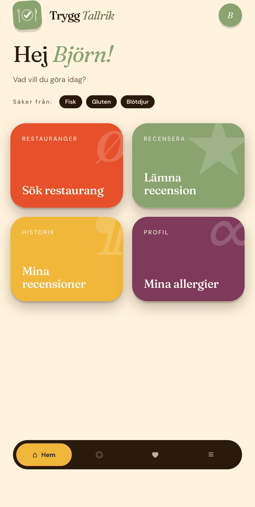
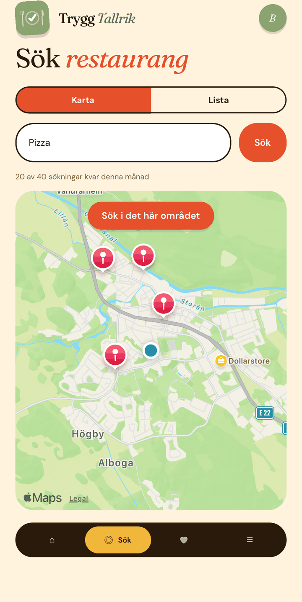
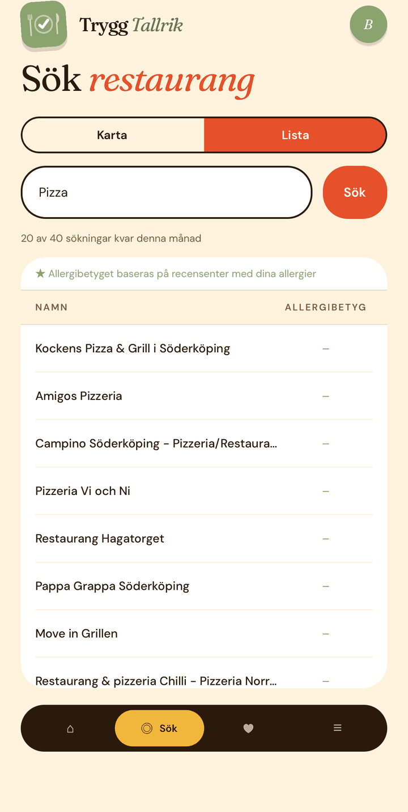
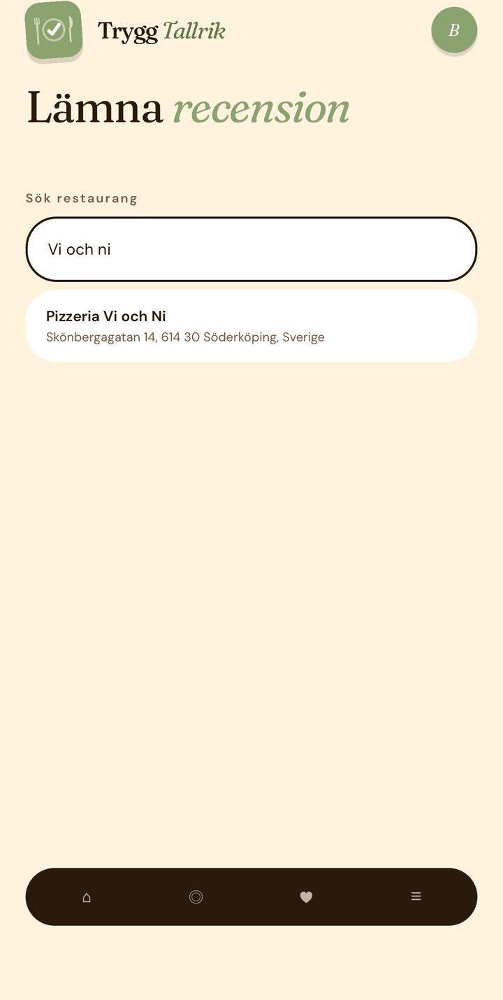
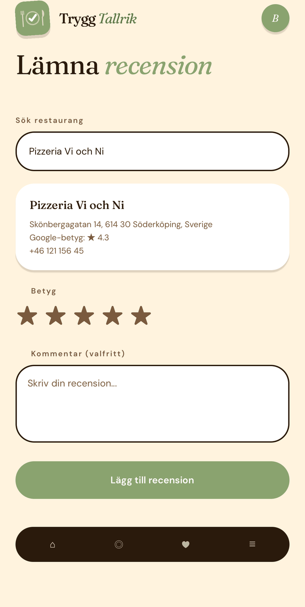
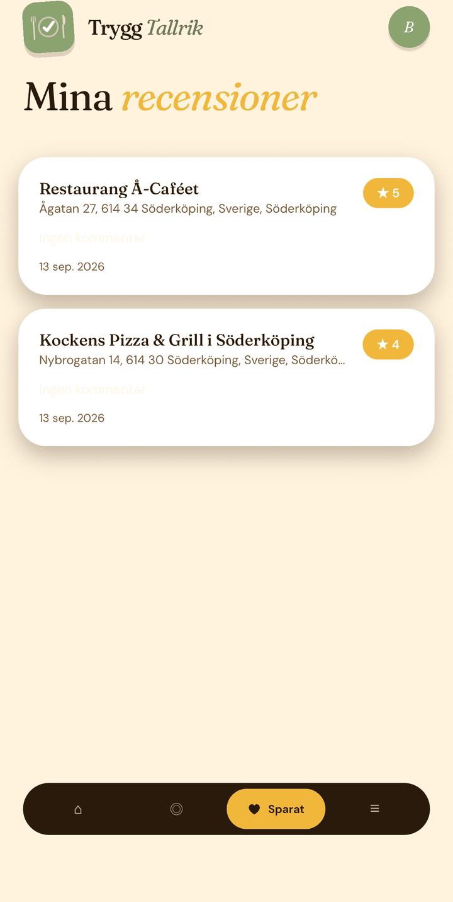
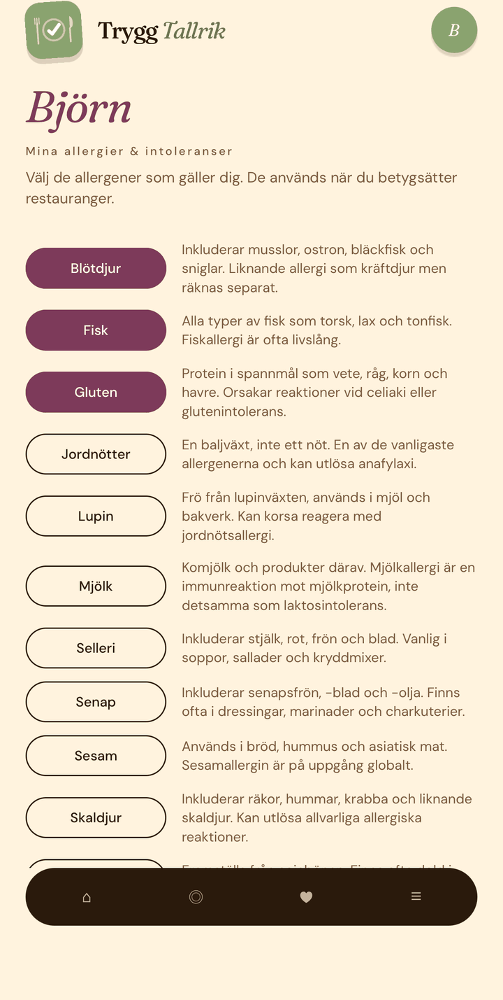

Så använder du Trygg Tallrik
En genomgång av appens skärmar — vad de gör och hur du använder dem, från att skapa konto till att lämna din första recension.
Välkomstskärmen
Det första du ser när du öppnar appen utan att vara inloggad. Här får du en kort presentation av appen och dess tre huvudfunktioner: att söka restauranger, se hur de hanterar allergier och läsa gästrecensioner.
Här finns två knappar:
- Skapa konto tar dig till registreringen.
- Logga in tar dig till inloggningen.
Skapa konto
Formuläret har tre fält:
- Ditt namn är visningsnamnet som syns i appen, till exempel i hälsningen på hemskärmen och som initial i din avatar.
- E-postadress
- Lösenord ska vara minst 8 tecken. En styrkemätare visar Svag, Medel eller Stark medan du skriver.
När du registrerar dig skapas kontot och du ser bekräftelsen ”Konto skapat!”. Därefter skickas du till inloggningen — du blir alltså inte automatiskt inloggad efter registreringen.
Logga in
Fyll i din e-postadress och ditt lösenord. Om något går fel visas ett felmeddelande, till exempel vid fel lösenord eller om du inte har bekräftat din e-postadress. När inloggningen lyckas kommer du till hemskärmen.
Hemskärmen
Startsidan efter inloggning. Den innehåller:
- en hälsning med ditt namn
- en rad med ”Säker från:”-taggar som visar de allergener du valt i din profil (visas bara om du har valt några)
- fyra rutor att navigera från:
- Sök restaurang tar dig till sökskärmen.
- Lämna recension tar dig till recensionsskärmen.
- Mina recensioner visar historik över dina egna recensioner.
- Mina allergier tar dig till din allergiprofil.
Överst på alla huvudskärmar finns en avatar med din initial uppe till höger. Ett tryck på den tar dig direkt till kontoinställningarna.

Sök restaurang
Sökningen använder Google Places och begränsas till en radie på 1,5 km från din plats, så appen behöver få platsbehörighet.
- Skriv ett sökord — restaurangnamn, kök eller maträtt — och tryck Sök.
- Växla mellan Karta och Lista med knapparna högst upp.
- I kartvyn visas restaurangerna som markörer. Tryck på en markör och sedan på texten i bubblan för att öppna restaurangsidan.
- I listvyn visas namn, Googles betyg och appens eget allergibetyg i en tabell. Tryck på en rad för att öppna restaurangsidan.
Allergibetyget i listan är personligt: det räknas bara ut från recensioner skrivna av andra användare som delar alla dina allergener — se så räknas allergibetyget. Har du inga allergener valda visas i stället snittet av alla recensioner. Träffar med ett allergibetyg sorteras överst.
Hur många sökningar du kan göra per månad beror på din prenumerationsnivå, se användarvillkoren.


Restaurangsidan
Öppnas från sök- eller kartresultat. Den visar:
- restaurangens namn och adress
- tre badges: Googles betyg, Trygg Tallriks totala snitt (alla recensioner, oviktat) och antal recensioner
- knappen Lämna recension, som tar dig vidare till recensionsformuläret med restaurangen redan ifylld
- Betyg per allergen — ett snitt för varje allergen som förekommer i restaurangens recensioner, oavsett vem som skrivit dem. Dina egna allergener är färgmarkerade så att de syns extra tydligt.
- en lista med samtliga recensioner: betyg, datum, allergentaggar och eventuell kommentar
Lämna recension
Du når recensionsformuläret antingen via rutan på hemskärmen eller via ”Lämna recension” på en restaurangsida.
- Sök restaurang. Skriv minst två tecken för att få förslag från Google Places och tryck på ett förslag för att välja restaurangen. Kommer du från en restaurangsida är detta redan ifyllt.
- Välj betygsläge. Det finns två:
- Enkel: ett samlat betyg på 1–5 stjärnor för hela besöket.
- Avancerad: ett separat betyg på 1–5 för var och en av de allergener du själv har i din profil. Det kräver att du lagt in allergener under Mina allergier, annars visas en text om det. Slutbetyget som sparas är genomsnittet av de allergenbetyg du satt.
- Kommentar (valfritt) — skriv vad du vill i fritext.
- Lägg till recension sparar recensionen. Den taggas automatiskt med de allergener du har i din profil, och det är de taggarna som används i allergibetygen på sök- och restaurangsidorna.


Mina recensioner
En lista över alla recensioner du själv har skrivit, med den nyaste först: restaurangnamn, adress, betyg, eventuell kommentar och datum. Är listan tom uppmanas du att lägga till din första recension via startsidan.

Mina allergier
Här väljer du vilka allergener och intoleranser som gäller dig. Varje allergen visas som en tryckbar pill med en kort förklarande text bredvid. Valda allergener markeras, och antalet visas som ”X av Y valda”. Tryck på Spara allergier för att spara.
Ditt val styr:
- vilka allergener dina egna recensioner taggas med (se Lämna recension)
- vilket allergibetyg du ser i sökresultaten (se så räknas allergibetyget)
- vilka allergener som markeras som dina på restaurangsidan

Kontoinställningar
Du når inställningarna via avataren uppe till höger på valfri huvudskärm.
- Användarnamn — byt ditt visningsnamn.
- E-postadress — ett byte måste bekräftas via mejl innan det aktiveras.
- Support & feedback — en länk till tryggtallrik.se.
- Logga ut
- Radera konto — kräver tre steg:
- Tryck på ”Radera mitt konto” för att öppna panelen.
- Bocka i att du förstår att det inte går att ångra.
- Tryck på ”Radera mitt konto permanent” och bekräfta i dialogrutan som visas.
Kontot och all din personliga data raderas permanent. Dina tidigare recensioner finns kvar men blir anonyma, eftersom kopplingen till din profil tas bort. Läs mer i integritetspolicyn.
Så räknas allergibetyget
Appen använder två olika beräkningar, beroende på var du tittar.
I sökresultaten
Du ser ett personligt betyg. Bara recensioner från andra användare vars allergiprofil täcker alla dina egna allergener räknas med. Har du valt gluten och laktos räknas alltså bara recensioner från personer som har minst gluten och laktos i sin profil. Har du inga allergener valda visas i stället snittet av alla recensioner för restaurangen.
På restaurangsidan
Du ser ett separat snitt för varje allergen som förekommer bland restaurangens recensioner, oavsett vem som skrivit dem. Så kan du se hur restaurangen bedöms specifikt för till exempel nötallergi respektive laktosintolerans.
Hittar du inte det du söker? Skriv till oss på hej@tryggtallrik.se.